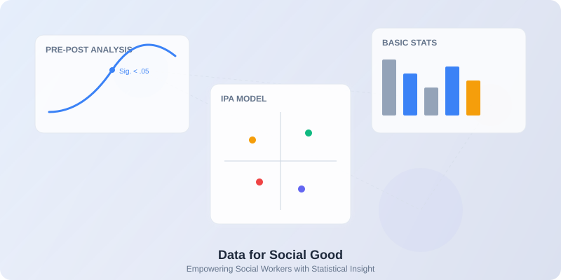

통계다루기
사회복지 데이터 분석을 더 쉽고 정확하게
사회복지 현장에서 통계는 프로그램의 효과성을 입증하는 강력한 도구가 됩니다. 복잡한 통계 이론을 몰라도, 사회복지 실천가들이 현장에서 바로 활용할 수 있는 최적화된 도구들을 제공합니다.

사회복지를 위한 데이터 통계 대시보드
사회복지 데이터 분석을 더 쉽고 정확하게
사회복지 현장에서 통계는 프로그램의 효과성을 입증하는 강력한 도구가 됩니다. 복잡한 통계 이론을 몰라도, 사회복지 실천가들이 현장에서 바로 활용할 수 있는 최적화된 도구들을 제공합니다.

사회복지를 위한 데이터 통계 대시보드